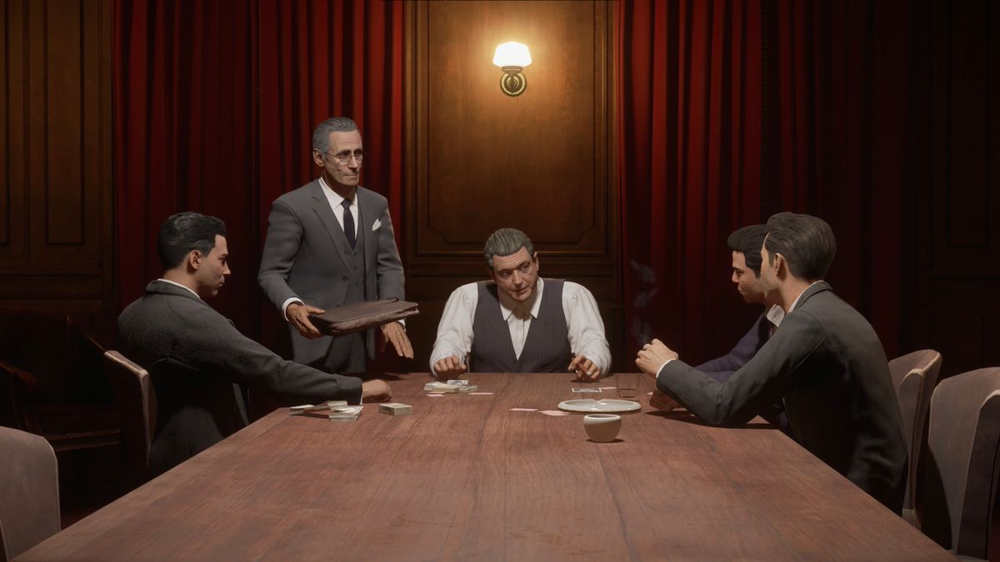
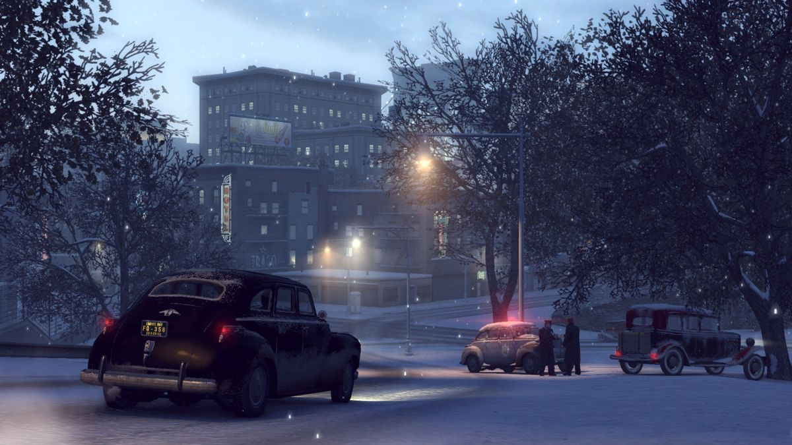
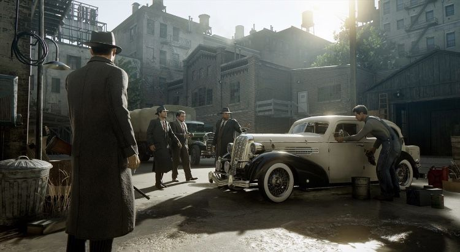
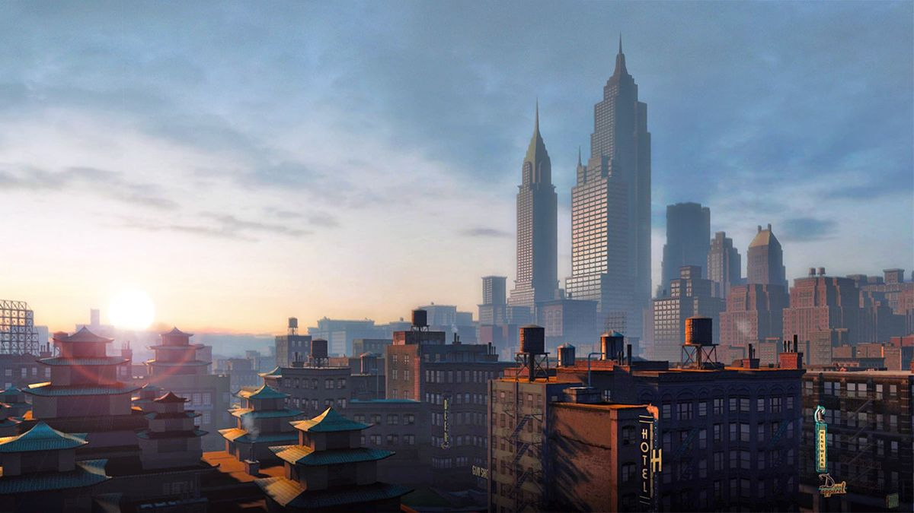

Mafia
01 / 2002
Mafia: The City of Lost Heaven
Tommy Angelo se z obyčejného taxikáře stává mužem rodiny Salieri v ikonickém městě 30. let.
Prohlédnout svět →Příběhy, které se neodpouštějí
Vstupte do světa, kde čest něco znamená, rodina je zákon a každé rozhodnutí má svou cenu.
Prozkoumat sériiKapitoly jedné legendy
Od ulic Lost Heaven až po sluncem zalité pobřeží. Každý díl vypráví vlastní příběh o vzestupu, loajalitě a pádu.
01 / 2002
Tommy Angelo se z obyčejného taxikáře stává mužem rodiny Salieri v ikonickém městě 30. let.
Prohlédnout svět →02 / 2010
Vito Scaletta se vrací z války a v Empire Bay hledá cestu k lepšímu životu. Cesta vzhůru však něco stojí.
Poznat postavy →03 / 2016
Lincoln Clay buduje v New Bordeaux novou rodinu, aby se pomstil těm, kteří mu vzali všechno.
Prohlédnout galerii →Od taxíku k pomstě
Mafia staví na filmovém vyprávění, dobové hudbě a rozhodnutích, která mění životy hlavních hrdinů.
První Mafia z roku 2002 ukázala, že příběh a atmosféra mohou být stejně důležité jako akce.
Mafia II přenesla hráče do poválečného Empire Bay a představila přátelství Vita a Joea.
Mafia III nabídla otevřenější město, budování organizace a příběh o osobní pomstě.
Tváře pod kloboukem
„Rodina je to nejdůležitější.“
Lost Heaven · 1930„Každý má svůj plán.“
Empire Bay · 1945„Pomsta je osobní.“
New Bordeaux · 1968Města, která žijí vlastním životem
Ve hrách Mafia nejsou města jen kulisou. Každá ulice, bar i přístav ukrývá příběh. Projeďte se dobovými auty, nasajte atmosféru a zjistěte, komu město skutečně patří.
Illinois, USA
New York, USA
Louisiana, USA
Momenty z ulice



